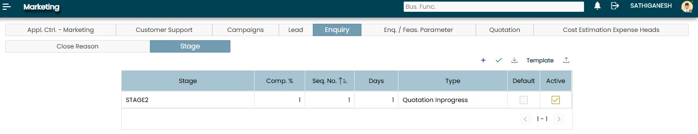

<div data-category="CRM" data-title="Stage" data-updated="December 01, 2025" data-contributors="RoadmapIT" data-breadcrumb="Home,CRM,Stage">
  <div class="page-content">
    <p>In marketing Stage are all configured in this screen.</p>
    <h5>Navigation path:</h5>
    <p class="fs-6">CRM \ Setup \ Setup-Marketing \ Enquiry \ Stage</p>
    
    <ul style="list-style-type: none; align-content: center">
      <li class="mouse-icon">Click on <i class="bi bi-plus fs-4 mx-2 text-primary"></i> button</li>
      <li class="mouse-icon">Enter the Stage</li>
      <li class="mouse-icon">Enter the Completion %</li>
      <li class="mouse-icon">Enter the Seq. No.</li>
      <li class="mouse-icon">Enter the Days</li>
      <li class="mouse-icon">Select the appropriate Type</li>
      <li class="mouse-icon">Select the Active flag if the Stage is to be used in transactions</li>
      <li class="mouse-icon">Select the Default flag if the Stage is to be used in transactions</li>
      <li class="mouse-icon">Click <i class="bi bi-check-lg fs-4 mx-1 text-success"></i> to save</li>
    </ul>
  </div>
</div>
